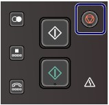

You can use the machine to print photos in a memory card or USB flash drive, make copies, send/receive faxes, or scan originals without a computer. You can also make good use of the various functions of the machine with the menu screen and the settings screen on the LCD.
This section describes the basic operation to use the settings screen in each mode.
 Basic Operation on the Settings Screen
Basic Operation on the Settings Screen
 Basic Operation in Each Mode
Basic Operation in Each ModeThe copy, scan, fax, or card mode can be selected.
The desired mode can be selected by pressing the mode button on the Operation Panel.
On each mode screen, the various functions can be selected or the setting can be changed, with the Function buttons or the  ,
,  ,
,  , and
, and  buttons.
buttons.
 Selecting a Mode
Selecting a ModeThe screen will be switched to the selected mode screen by pressing a mode button (A). The setup menu screen will appear by pressing the Setup button (B).
The lamp on the selected mode button or Setup button will light up.
Copy mode
Displays the copy standby screen (standard copy screen). Just load an original and press the Black or Color button. The copy will be made with the same magnification (100%).
You can also change the magnification, erase dark frame or shade of bound part when copying a book, or reprint printed photos.
Scan mode
You can save/forward scanned data to your computer or save them on a memory card or USB flash drive, with the Operation Panel.
 Fax mode
Fax mode
Displays the fax standby screen. Just load an original, enter a fax/telephone number, and press the Black or Color button. The fax will be sent.
You can also print received faxes or reports.
Card mode
You can print photos saved on a memory card of your digital camera or USB flash drive, or documents (PDF files) scanned with the machine.
Setup menu
You can maintain the machine, or change settings of the machine. You can also configure a wireless LAN connection.
See When Printing Becomes Faint or Colors Are Incorrect, Cleaning the Paper Feed Roller, or Machine Settings.
For details on the wireless LAN setup, refer to the printed manual: Getting Started.
Selecting a Menu or Setting ItemWhen you select a menu, function menus (C) for that menu will appear at the bottom of a screen in each mode. Pressing a Function button (D) displays its corresponding menu or settings screen.
On the menu or settings screen, use the , , , or button (E) to select an item, then press the OK button (F) to proceed with the procedure. To return to the previous screen, press the Back button (G).
Using the Function buttons
The following describes the operation on the copy standby screen as an example.
The functions and number of function menus vary depending on the screen. Check the items displayed at the bottom of the screen, then select the one desired.
(J) Press the left Function button. The copy menu screen will appear.
(K) Press the center Function button. The preview screen will appear.
(L) Press the right Function button. The print settings screen will appear.
Basic Operation on the Settings ScreenOn screens for changing print settings, use the or button to select an item, use the or button to select an option, then press the OK button.
On the Print settings screen in Select photo print of the card mode, for example, the procedure to change the print quality is as follows.
Use the or button to select Print qlty.
Use the or button to select High, and press the OK button.
The selected option will be set.
 Note Note
Use the
Use the
|
Other Operations Returning to the Previous ScreenThe screen will return to the previous screen every time you press the Back button.
| Note
See Operation Panel. |
Canceling a Fax Transmission/Reception, Copy, Print, or Scan JobYou can press the Stop button to cancel a fax transmission/reception, copy, print, or scan job in progress.
